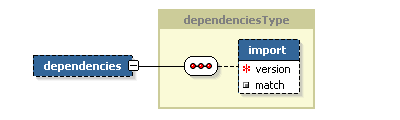
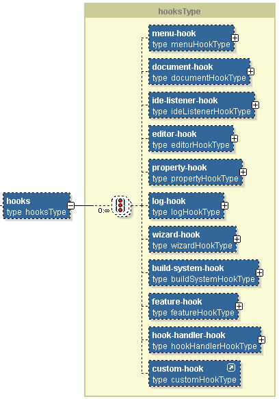
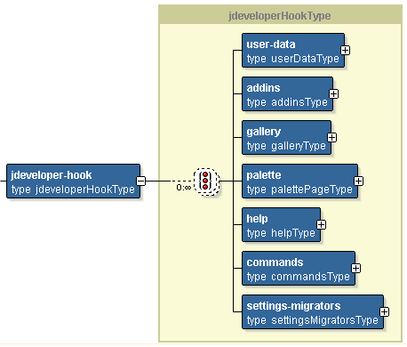
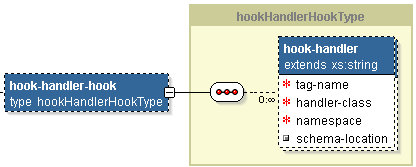
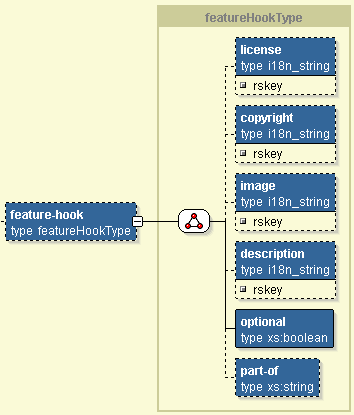

IDE Extension Packaging
Introduction
The IDE extension packaging is based on the concept of an Extension as a unit
of functionality that when deployed, extends the IDE with new behavior.
Extensions are code modules written with
the purpose of extending an IDE with new functionality. An extension defines a
set of integration points where new IDE functionality can be plugged-in. Extension
writers define how specific extensions bind to one or more integration points
by declaring the binding resolution in an Extension Manifest file. This file gets
packaged in a jar file that when deployed onto an IDE's extension path (i.e.,
<oracle-home>\jdev\extensions), provides the IDE with the binding information
needed to link-in the extension.
By convention the extension jar file
should be named by appending the extension version number to the extension's unique
identifier string.
An extension may become a feature when the extension provider define the feature
extension point.
An extension can be defined as a feature
that includes other extensions by declaring in the extension manifest the required
feature information. A Feature is comprised of one or more extensions
that can be installed/uninstalled or enabled/disabled as a unit.
Packaging and Deployment
Extensions are package in jar files. An extension jar file contains:
- The extension manifest placed in a directory named meta-inf.
- An optional .properties resource file.
- Optional files and/or directories that will be copied by the IDE to the
system directory under a subdirectory whose name is derived from the extension's
unique identifier and the extension's version. The copy happens once, when
the extension is loaded for the first time.
- Optional class files. When the extension jar file contains classes the extension
classpath must be set to the extension jar file name.
Extension jar files can be deployed directly onto the IDE extension path, the
jdev\extensions directory. The IDE will
automatically discover all extension jars there and process their extension manifest
on startup. Extensions discovered in the IDE extension path cannot be disabled
or uninstalled by the user using the IDE. To stop loading extensions on startup
their extension jars must be removed from the IDE extension path. To allow extensions
to be disabled or uninstalled by the user, they must be deployed along with a
feature extension point..
Extension jars can be read from jdev\extensions and jdev_user_home/extensions
directory. If two extensions are located which have the same identifier, the extension
with the highest version number will be loaded.
The old extension path jdev\lib\ext exists
only for backwards compatibility support only. 9.0.4 and 9.0.5 extension jars
must be deployed there in order to be picked up by the IDE.
The Extension Manifest
The extension manifest file, named by convention extension.xml, is the XML file where extension
writers declare the extension's integration points to the IDE. The structure,
content, and semantics of the extension manifest file are defined by JSR 198 xml
schema file: extension.xsd. The figure below shows the extension
manifest schema.

The extension element
defines the following attributes:
- id - a required unique string identifying
the extension. To minimize identifier collisions, the identifier should be
based on the Internet domain id of the extension provider. The domain name
tokens should be reversed and additional name tokens should be separated by
dots. For example, extension provider oracle.com could identify an extension providing
source control support with the identifier: com.oracle.SourceControlSystem. The extension
ID along with the extension version are used to create a unique directory
name where extension data is placed.
- rsbundle-class - a fully qualified
list resource bundle class, or a fully qualified Properties file path. Resource
bundles are used to get the translated strings of elements of type i18n_string.
If a resource bundle class is specified, the extension jar file must be added
to the IDE classpath when processing the extension manifest. The extension
jar file may be removed from the IDE classpath once the manifest is processed.
The extension
element also defines the following elements:
- name- name of the extension. The
element type is i18n_string indicating
that the label can be internationalized.
- version - the extension version
number. The version number is a composite number formed by concatenating three
dot-separated integers as follows: major.minor.build. A change in the major version number indicates an incompatible
version change, a change in the minor version number indicates a compatible
version change, and a change in the build version number indicates a patch upgrade.
The build or minor and build version numbers can be left out.
- esdk-version - the EDK version
used to write the extension. The edk-version format
is the same as the extension version format. The current version of the EDK
is 10.1.3. An extension may not be
loaded if the major edk-version number
is older than the current EDK version. The extension will not be loaded if
the major edk-version number
is newer than the current EDK version.
- owner- user displayable name of
the extension provider company. The element type is i18n_string indicating
that the label can be internationalized.
- platform-info - Indicates what toolkit
was used to implement the extension graphical user interfaces. The valid options
are: swing or swt. If the platform-info is not specified, swing is assumed.
- classpaths - relative classpath
pointing to where additional library jar files can be found. Multiple classpaths
can be specified. All paths will be added to the IDE classpath.
- hooks - extensions have a
set of predefined and custom extension points that extension writers use to
add behavior to the IDE and/or other extensions.
- dependencies - extension can depend
on other extensions. Such dependencies are expressed using this element.
Extension Dependencies
Extension dependencies are specified using the extension dependencies
element. The figure below shows this element schema:

The dependencies element lists all extensions imported by another extension.
An extension is only loaded when all imported extensions are available.
The import element is used to declare the extension identifier of the imported
extension along with the following attributes:
- version - the imported extension version. Clients can specify partial
version numbers in order to indicate compatibility. For example, specifying
only the major version number indicates that the dependent extension would
work with any minor and qualifier version numbers. Similarly if the major
and minor version numbers are given, then the dependent extension works with
any qualifier version numbers. Finally, if the major, minor, and qualifier
numbers are given, this indicates that the dependent extension works if the
imported extension matches the given numbers. The match must be exact if the
match element has been set to true.
- match - indicates that the version numbers specified must match exactly
to the imported extension version numbers. The default attribute value is
false, indicating that greater or equal matches are acceptable. The greater
or equal comparison is done only on the last version number specified. For
example, if the import element is set to X, the version attribute is
set to 10.2, and the match attribute is false, an extension whose ID
and version is X and 10.3.5, respectively, would work, but would not, if the
extension version were 11.1.0. For a 11.1.0 extension version to work the
import element version attribute would have to be set to 10
instead of 10.2.
Dependency example match = true
<dependencies>
<import version="10.1.3" match="true">mycompany.extension</import>
</dependencies>
| This dependency would be satisfied by these versions of mycompany.extension |
This dependency would not be satisfied by these versions of mycompany.extension |
| 10.1.3 |
10.1.4 |
| 10.1.3.1 |
10.1 |
| 10.1.3.20.573 |
11 |
Dependency example match = false
<dependencies>
<import version="10.1.3" match="false">mycompany.extension</import>
</dependencies>
| This dependency would be satisfied by these versions of mycompany.extension |
This dependency would not be satisfied by these versions of mycompany.extension |
| 10.1.3 |
10.2 |
| 10.1.3.0 |
10.2.5 |
| 10.1.3.20.498 |
11.0 |
| 10.1.4.20 |
11 |
| 10.1.5 |
|
The Hooks Element
The hooks element defines the extension
points. These are a set of predefined and custom hooks that extension providers
use to add behavior to the IDE and/or other extensions. The figure below shows
the JSR 198 hooks element schema.

Each individual hook allows an extension to provide specific binding information
to plug into different areas of an IDE. Here are the main areas where extensions
plug-in:
- Menus and commands through the menu-hook,
- Document model through the document-hook,
- IDE events through the ide-listener-hook,
- Custom editors through the editor-hook,
- IDE preferences and project settings through the property-hook,
- Log pages through the log-hook
- New wizards through the wizard-hook, and
- The compiler through the build-system-hook.
- The feature-hook
allows extensions to appear in an IDE's extension management UI as features
that can be enabled/disabled.
- The custom-hook
and hook-handlers
allows extensions to define their own extension points.
JDeveloper defines the following custom hook schema:

The jdeveloper-hooks
element defines the following elements:
- user-data - relative paths to feature
specific files that are copied to the IDE user home the first time the feature
is loaded by the IDE. These files are copied to an extension specific directory
located inside the system directory. The name of the extension directory is
derived from the extension name and version.
- addins - a list of classes implementing
the Addin interface.
- gallery - gallery extension point.
Gallery pages and items are added using this extension point.
- palette - palette extension
point. Palette pages and items are added using this extension point.
- help - help system extension point.
- toolbar - toolbar extension point.
Buttons to specific toolbars can be defined using this extension point.
- commands - commands extension points.
- settings-migrators - responsible
for migrating extension user settings when a new version of the extension
is deployed. .
The structure, content, and semantics of the jdeveloper-hooks element are defined
by JDeveloper schema file extension-jdeveloper-1013.xsd.
Custom Extension Points
Custom extension points allow extension writers to define their own, extension
specific, schema. When the IDE encounters a custom extension point it delegates
to an extension specified namespace handler. The figure below shows the namespace-handler
element schema.

The hook-handler-hook
element defines the following attributes:
- tag-name - the tag name of the extension
provided custom extension point. All tags with the same name are processed
by the specified handler class.
- handler-class - a fully qualified
class name of the class used to process the custom extension point elements.
- namespace - namespace declared in
the extension specific schema.
- Schema-location - relative location
where to find the custom extension point schema file. By convention, this
file should be placed in the extension META-INF directory along with the extension
manifest file.
Defining a Custom Extension Point
An extension that introduces a custom extension point needs to:
- Define the schema for custom extension point, and
- Define the hook-handler in the extension manifest
For example, to define the schema for that extension point, the ASP extension
could introduce the following schema for the jsplibraries extension point:
<?xml
version="1.0" encoding="windows-1252"?>
<xsd:schema xmlns:xs="http://www.w3.org/2001/XMLSchema"
xmlns="http://xmlns.oracle.com/jdeveloper/1013/jsp-hook"
xmlns:ext="http://jcp.org/jsr/198/extension-manifest"
targetNamespace="http://xmlns.oracle.com/jdeveloper/1013/jsp-hook"
elementFormDefault="qualified"
>
<xsd:import namespace="http://jcp.org/jsr/198/extension-manifest"
schemaLocation="extension.xsd" />
<xsd:element name="jspLibraries"
substitutionGroup="ext:custom-hook"
type="jspLibrariesType"/>
</xsd:schema>
An extension defining a extension manifest that hooks into jsplibraries custom
hook would need to do the following in their extension manifest:
<extension xmlns="http://xmlns.oracle.com/jdeveloper/1013/extension"
xmlns:jsp="http://xmlns.oracle.com/jdeveloper/1013/jsp-hook"
id="oracle.JDeveloper.Jsp">
<name>Some
extension that depends on JSP</name>
<version>1.0</version>
<esdk-version>10</esdk-version>
<owner>ABC
Corporation</owner>
<hooks>
<jsp:jspLibraries>
...
</jsp:jspLibraris>
</hooks>
<dependency>
<use extension="oracle.j2ee.jsp"/>
</dependency>
</extension>
Another example of a custom extension point are JDeveloper libraries - see
schema jdev-libraries.xsd.
Defining an Feature
An extension can be defined as a feature by declaring the feature hook. The figure below shows the feature
element schema.

The feature element
defines the following elements:
Macros
Macro support is enabled through out the extension manifest. The following
macros are available:
- ${oracle.home} - translates to Oracle install directory.
- ${ide.user.dir} - translates to the directory where the user specific files
are located. This is mainly the system, and mywork directories.
- ${jdev.lib}- translates to the lib directory under the Oracle JDeveloper
install directory.
- ${oracle.lib}- translates to the lib directory under Oracle Home directory.
- ${ide.extension.user.home}- translates to the Oracle JDeveloper extension's
system directory.
- ${ide.extension.install.home} - translates to the Oracle JDeveloper extensions
installed extension directory